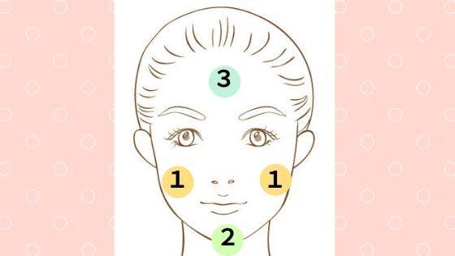
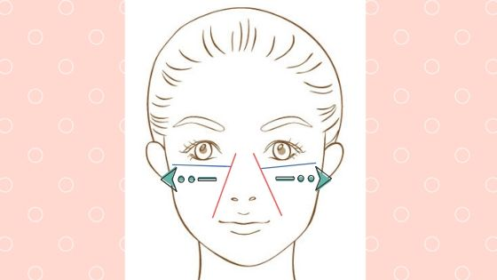
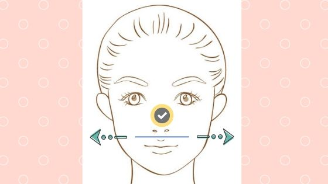

塗り方は？化粧水と併用してもいい？NULC 薬用スリープロテクトジェルの使い方
化粧水と併用はOK。効果的なの塗り方はこちら！
２．ほっぺた、あご、おでこの順番で塗る
３．鼻のつけねから外側に広げるように目の下に伸ばす（左右両側）
４．鼻に塗ったあと鼻の下を中央から外に広げるように伸ばす
塗り方・使い方の順番について詳しくお話します
手に２cmちょっと超えるくらいに円状で出す

サクランボの大きさくらい（気持ちちょっと少な目）になるように真ん丸の形で手に出します。
ほっぺた、あご、おでこの順番で塗る
まずは顔の外側。
なんでこの順番？それは油分が少ない部位から塗る必要があるからです。
油分が少ない部分はそれだけ乾燥するところなので多めにつけてしっかりと保湿します。
逆に額などの油分が多い部位はつけすぎないように注意が必要ですね。（特に夏）
鼻のつけねから外側に広げるように目の下に伸ばす
顔の内部。シワができやすい部分ですね。
ここもしっかり塗って乾燥してできるシワへの対策です。
目の下にジェルを伸ばすときは目をつぶって下まぶたを上に軽く押しほぐしてマッサージしながら塗るといいですよ。
そうすることでまぶたが伸ばされ、シワを目立たなくできます。ほぐすことで目の疲れも一緒に癒してくれて一石二鳥ですね。
鼻に塗ったあと鼻の下を中央から外に広げるように伸ばす
最後は鼻です。鼻は顔の目立つパーツなのでしっかりツヤをだして忘れずに塗ってください。
つけるのは最後にしていますが、繊細で荒れやすいため冬の乾燥している時期などは、足りないなと感じたら少し多めにつけてください。

NULC 薬用スリープロテクトジェル（オールインワンジェル）トップ
リンク化粧水と併用する使い方
お気に入りの化粧水があって、そっちも絶対使いたい。ってなればもちろん併用ですね。
もし化粧水と一緒に使う場合、オールインワンジェルを使う前に化粧水を使います。
理由は単純です。一般的にスキンケアの順番は化粧水の後に美容液、乳液、クリームと順番につかいます。
化粧水は肌に水分を与え、角質を柔らかくすることで乳液やクリームを塗るための土台作りの役割もあります。
化粧水＋オールインワンジェルということは、しっかりと土台を作ってそれからジェルを塗ることになるので、肌に効率よく浸透させることができるのです。
顔以外への使い方
スリープロテクトジェルは顔以外にも使えます。
おすすめの塗る場所は手の甲。
手というのは年齢が顕著に表れる場所であるため、顔と同じくらいケアが必要です。
また、手の甲とは書きましたが、「手」は乾燥や洗剤などにより傷つきやすいです。
つまり、
- 手の乾燥によるしわを目立たなくする
- 手の保護
この２つの目的のために「手」にスリープロテクトジェルを塗るのがおすすめなのです。
使い方まとめ
- １回の使用量は２cm(一円玉)より少し多いくらい
- 油分の少ないほっぺたや顎から塗る。
- 油分の多いおでこや鼻は後から塗る。
- 鼻のつけねや目の下はシワができやすいので漏れないように。
- 化粧水と併用する場合は先に化粧水を使う。
- 顔以外にも「手」に使うのがおすすめ。
簡単に効果を引き出せるので、是非試してみてくださいね。
- NULC 薬用スリープロテクトジェル（オールインワンジェル）トップ
- NULC 薬用スリープロテクトジェル（オールインワンジェル）の効果
- NULC 薬用スリープロテクトジェル（オールインワンジェル）の使い方
- NULC 薬用スリープロテクトジェル（オールインワンジェル）の使うタイミング
- NULC 薬用スリープロテクトジェル（オールインワンジェル）は乾燥肌でも大丈夫？
- NULC 薬用スリープロテクトジェル（オールインワンジェル）の評価・評判・口コミ
- NULC 薬用スリープロテクトジェル（オールインワンジェル）の値段は安い？
- NULC 薬用スリープロテクトジェル（オールインワンジェル）と人気のジェルを比較
- NULC 薬用スリープロテクトジェル（オールインワンジェル）は子供にも使える？
- NULC 薬用スリープロテクトジェル（オールインワンジェル）は無料でお試しはできる？
- NULC 薬用スリープロテクトジェル（オールインワンジェル）の会社ナルク（NULC）とは？